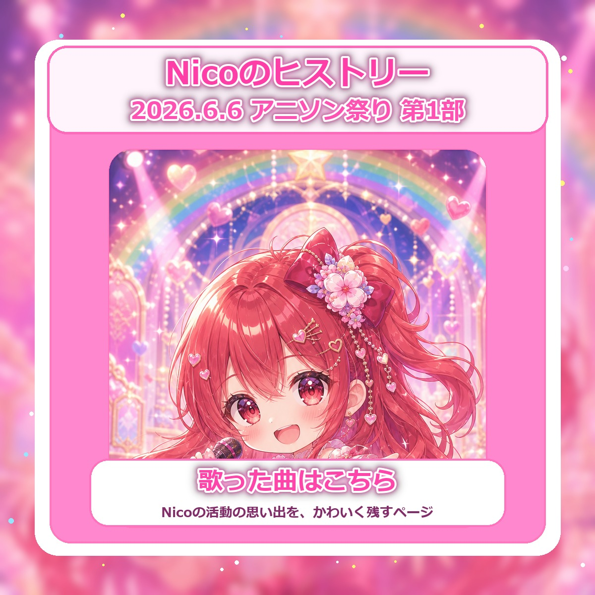
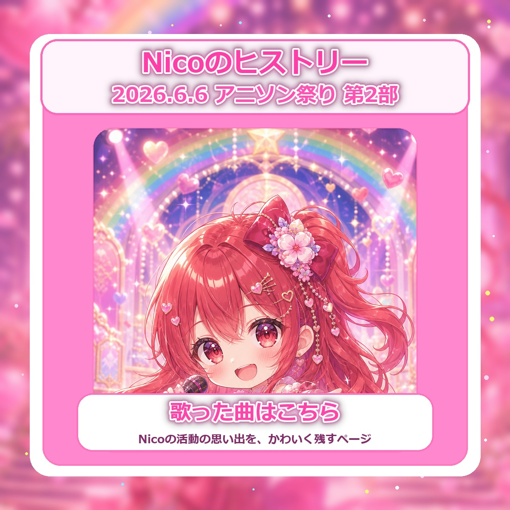
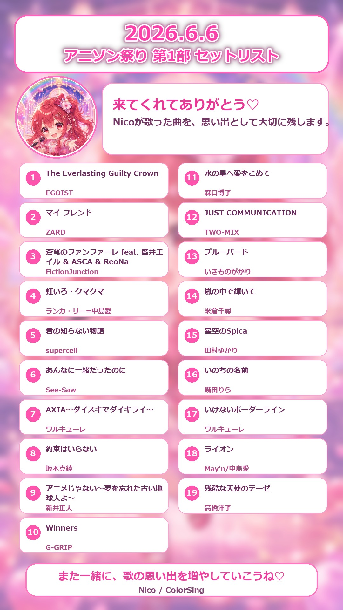
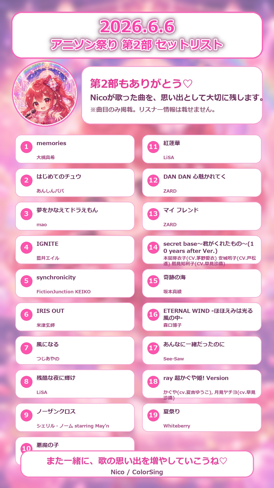

2026年6月6日
アニソン祭り 第1部
ColorSingで歌ったアニソン祭りの記録です。歌った曲だけを、Nicoの思い出として大切に残します。
Nicoの活動の思い出を、年月ごとにかわいく残していくページです。まずは2026年6月6日のアニソン祭り第1部・第2部を掲載しています。

ColorSingで歌ったアニソン祭りの記録です。歌った曲だけを、Nicoの思い出として大切に残します。

第2部のセットリストも、Nicoの活動履歴として追加しました。これからもイベントごとに増やしていけます。
2026年6月6日 アニソン祭り第1部のセットリストです。

2026年6月6日 アニソン祭り第2部のセットリストです。
